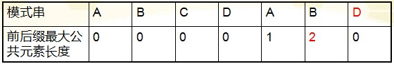

本文最后更新于：2023年7月4日 晚上
排序 归并排序 递归实现 1 2 3 4 5 6 7 8 9 10 11 12 13 14 15 16 17 18 19 20 21 22 23 24 25 26 27 28 29 30 31 32 int length = 100 ;int data[length];void Merge (int first, int mid, int last) int *temp = new int [length]; int i = first, j = mid+1 , k = first;while (i <= mid+1 && j <= last){if (data[i] <= data[j]){else {while (i <= mid){while (j <= last){for (i = first; i <= last; i++){delete [] temp;void MergeSort (int first, int last) if (first == last) return ; int mid = (first + last) / 2 ;MergeSort (first, mid); MergeSort (mid+1 , last); Merge (first, mid, last);
非递归实现 1 2 3 4 5 6 7 8 9 10 11 12 13 14 15 16 17 18 19 20 21 22 23 24 25 26 27 28 29 30 31 32 33 34 35 36 37 38 39 40 41 42 43 int length = 100 ;int data[length];void Merge (int first, int mid, int last) int *temp = new int [length]; int i = first, j = mid+1 , k = first;while (i <= mid+1 && j <= last){if (data[i] <= data[j]){else {while (i <= mid){while (j <= last){for (i = first; i <= last; i++){delete [] temp;void MergePass (int h) int i = 0 ;while (i+2 *h <= length){Merge (i, i+h-1 , i+2 *h-1 );2 *h;if (i+h < length){Merge (i, i+h-1 , length-1 );void MergeSort () int h = 1 ;while (h < length){MergePass (h);2 *h;
反转链表 1 2 3 4 5 6 7 8 9 10 11 ListNode* reverseList (ListNode* head) {NULL ;while (p1!=NULL ){return p2;
高精度 加法 1 2 3 4 5 6 7 8 9 10 11 12 13 14 15 16 17 18 19 20 21 22 23 24 25 26 27 28 29 30 31 32 33 34 35 36 37 38 39 40 41 #include <bits/stdc++.h> using namespace std;operator +(string h1, string h2)reverse (h1.begin (), h1.end ()); reverse (h2.begin (), h2.end ()); int len = max (h1.length (), h2.length ()); for (int i = 0 ; i < len; i++)int x3 = 0 ;if (i < temp.length ())int (temp[i] - '0' ); int x1 = 0 ;if (i < h1.length ())int (h1[i] - '0' ); int x2 = 0 ;if (i < h2.length ())int (h2[i] - '0' ); to_string (x3);reverse (x.begin (), x.end ()); erase (i, 1 ); insert (i, x); reverse (temp.begin (), temp.end ()); return temp;int main () "0" ;
递归 全排列 1 2 3 4 5 6 7 8 9 10 11 12 13 14 15 16 17 18 19 20 21 22 23 24 25 26 27 28 29 30 31 32 33 34 35 36 37 38 39 40 41 42 43 #include <bits/stdc++.h> using namespace std;int n;int num[10010 ];inline void swap (int &a, int &b) int temp;void perm (int now, int len) if (now >= len)for (int i = 0 ; i < len; i++)for (int i = now; i < len; i++)swap (num[now], num[i]);perm (now + 1 , len);swap (num[now], num[i]);int main () for (int i = 0 ; i < 6 ; i++)1 ;perm (0 , 3 );"全排列的个数为：" << n << endl;return 0 ;
繁殖（递归思路启发） 某种单细胞生物采用分裂繁殖，每次可以分裂成两个相同大小的子体，子体可以继续如此分裂，当能量为1时停止。
1 2 3 4 5 6 7 8 9 10 11 12 13 14 15 16 17 18 19 20 21 22 23 24 25 26 27 28 29 30 31 32 33 34 35 36 37 38 39 40 #include <bits/stdc++.h> using namespace std;int > num;int >> ans;void dfs (int nowEnergy) if (nowEnergy == 1 )push_back (num);return ;for (int i = 1 ; i <= nowEnergy / 2 ; i++) push_back (i);dfs (i);pop_back ();int main () int n;push_back (n);dfs (n);int ansNum = ans.size ();for (int i = 0 ; i < ansNum; i++)int ansLen = ans[i].size ();for (int j = 0 ; j < ansLen; j++)" " ;
汉诺塔问题 1 2 3 4 5 6 7 8 9 10 11 12 13 14 15 16 17 18 19 20 21 22 23 24 25 26 #include <bits/stdc++.h> using namespace std;void moveplate (int n, char from, char to) ":" << from << "-->" << to << endl;void hanoi (int n, char from, char to, char temp) if (n == 1 ){moveplate (n, from, to); return ;hanoi (n - 1 , from, temp, to); moveplate (n, from, to);hanoi (n - 1 , temp, to, from); int main () int n;char from = 'A' , temp = 'B' , to = 'C' ;hanoi (n, from, to, temp);
DFS 八皇后 [P1219] USACO1.5]八皇后 Checker Challenge - 洛谷 | 计算机科学教育新生态 (luogu.com.cn)
1 2 3 4 5 6 7 8 9 10 11 12 13 14 15 16 17 18 19 20 21 22 23 24 25 26 27 28 29 30 31 32 33 34 35 36 37 38 39 40 41 42 43 44 45 46 47 48 49 #include <bits/stdc++.h> using namespace std;int line[100 ] = {0 }; int col[100 ] = {0 }; int leftUp[100 ] = {0 }; int rightUp[100 ] = {0 }; int tot; int n; void DFS (int r) if (r>n)if (tot<=3 )for (int i=1 ;i<=n;i++)" " ;return ;for (int c=1 ;c<=n;c++)if (!col[c] && !leftUp[r-c+n] && !rightUp[r+c])1 ; 1 ; 1 ; DFS (r+1 ); 0 ;0 ;0 ;int main () DFS (1 );return 0 ;
前缀和 蓝桥杯2022年第十三届省赛真题-重新排序 - C语言网 (dotcpp.com)
1 2 3 4 5 6 7 8 9 10 11 12 13 14 15 16 17 18 19 20 21 22 23 24 25 26 27 28 29 30 31 32 33 34 35 36 37 38 39 40 41 42 43 44 #include <bits/stdc++.h> using namespace std;typedef long long LL; const int MAXN = 1000000 + 10 ;int main () int n, m;for (int i = 1 ; i <= n; i++)int L_term, R_term;for (int i = 1 ; i <= m; i++)1 ]--; for (int i = 1 ; i <= n; i++)1 ] + range[i]; sort (Ai + 1 , Ai + n + 1 , greater <int >()); sort (queryNum + 1 , queryNum + n + 1 , greater <int >()); for (int i = 1 ; i <= n; i++)
Treap 名次树 1 2 3 4 5 6 7 8 9 10 11 12 13 14 15 16 17 18 19 20 21 22 23 24 25 26 27 28 29 30 31 32 33 34 35 36 37 38 39 40 41 42 43 44 45 46 47 48 49 50 51 52 53 54 55 56 57 58 59 60 61 62 63 64 65 66 67 68 69 70 71 72 73 74 75 76 77 78 79 80 81 82 83 84 85 86 87 88 89 90 91 92 93 94 #include <bits/stdc++.h> using namespace std;int id[5000000 +5 ];struct Node {int size; int rank; int key; 2 ]; bool operator < (const Node &a)const {return rank < a.rank;}int cmp (int x) const if (x==key) return -1 ;return x<key?0 :1 ;void update () 1 ;if (son[0 ]!=NULL ) size+= son[0 ]->size;if (son[1 ]!=NULL ) size+= son[1 ]->size;void rotate (Node* &o,int d) 1 ]; 1 ]=k->son[d];update ();update ();void insert (Node* &o,int x) if (o==NULL ){new Node ();0 ]=o->son[1 ]=NULL ;rand ();1 ;else {int d=o->cmp (x);insert (o->son[d],x);update ();if (o<o->son[d])rotate (o,d^1 );int kth (Node* o,int k) if (o==NULL ||k<=0 ||k>o->size)return -1 ;int s=o->son[1 ]==NULL ?0 :o->son[1 ]->size;if (k==s+1 ) return o->key;else if (k<=s) return kth (o->son[1 ],k);else return kth (o->son[0 ],k-s-1 );int find (Node* o,int k) if (o==NULL )return -1 ;int d=o->cmp (k);if (d==-1 )return o->son[1 ] ==NULL ? 1 : o->son[1 ]->size+1 ;else if (d==1 ) return find (o->son[d],k);else {int tmp=find (o->son[d],k);if (tmp==-1 ) return -1 ;else return o->son[1 ] ==NULL ? tmp+1 : tmp+1 +o->son[1 ]->size;int main () int n;while (~scanf ("%d" ,&n)&&n){srand (time (NULL ));int k,g;scanf ("%d%d" ,&k,&g);new Node ();0 ]=root->son[1 ]=NULL ;rand (); root->key=g; root->size=1 ;printf ("%d %d\n" ,k,1 );for (int i=2 ;i<=n;i++){scanf ("%d%d" ,&k,&g);insert (root,g);int t=find (root,g); int ans1,ans2,ans;kth (root,t-1 ); kth (root,t+1 ); if (ans1!=-1 &&ans2!=-1 )else if (ans1==-1 ) ans=ans2;else ans=ans1;printf ("%d %d\n" ,k,id[ans]);return 0 ;
线段树 线段树可以在log_2n的时间复杂度内实现单点修改、区间修改、区间查询（区间求和，求区间最大值，求区间最小值）等操作
点修改与点查询 2182 – Lost Cows (poj.org)
1 2 3 4 5 6 7 8 9 10 11 12 13 14 15 16 17 18 19 20 21 22 23 24 25 26 27 28 29 30 31 32 33 34 35 36 37 38 39 40 41 42 43 44 45 46 47 48 49 50 51 52 53 54 55 56 57 58 59 60 61 62 63 #include <bits/stdc++.h> using namespace std;const int MAX = 8000 +10 ;int pre[MAX]; int tree[MAX*4 ]; int ans[MAX]; void build_tree (int node, int L, int R) if (L==R)1 ;return ;int mid = (L+R)/2 ;int left_node = node*2 ;int right_node = node*2 +1 ;build_tree (left_node,L,mid);build_tree (right_node,mid+1 ,R);int query (int order, int node, int L, int R) if (L==R){return L;int mid = (L+R)/2 ;int left_node = node*2 ;int right_node = node*2 +1 ;if (tree[left_node]>=order) return query (order,left_node,L,mid);if (tree[left_node]<order) return query (order-tree[left_node],right_node,mid+1 ,R);int main () int n;build_tree (1 ,1 ,n);1 ] = 0 ;for (int i=2 ;i<=n;i++)scanf ("%d" ,&pre[i]);for (int i=n;i>=1 ;i--) query (pre[i]+1 ,1 ,1 ,n);for (int i=1 ;i<=n;i++)printf ("%d\n" ,ans[i]);return 0 ;
区间修改与区间和 P3372 【模板】线段树 1 - 洛谷 | 计算机科学教育新生态 (luogu.com.cn)
1 2 3 4 5 6 7 8 9 10 11 12 13 14 15 16 17 18 19 20 21 22 23 24 25 26 27 28 29 30 31 32 33 34 35 36 37 38 39 40 41 42 43 44 45 46 47 48 49 50 51 52 53 54 55 56 57 58 59 60 61 62 63 64 65 66 67 68 69 70 71 72 73 74 75 76 77 78 79 80 81 82 83 84 85 86 87 88 89 90 91 92 93 94 95 96 97 98 99 100 101 102 103 104 105 106 107 108 #include <bits/stdc++.h> using namespace std;typedef long long int LL; const int Max = 100000 +10 ;4 ]; 4 ] = {0 }; void build_tree (int node, LL L, LL R) if (L==R) return ;2 ; 2 *node; 2 *node + 1 ; build_tree (left_node,L,mid); build_tree (right_node,mid+1 ,R); void push_down (int node, LL L, LL R) if (add[node]) 2 ; 2 *node; 2 *node+1 ; 1 )*add[node]; 1 ) + 1 )*add[node]; 0 ; void update_tree (LL _start, LL _end, LL val ,int node, LL L, LL R) if (_start<=L && _end>=R) 1 )*val;return ;push_down (node,L,R); 2 ;2 *node;2 *node + 1 ;if (_start<=mid) update_tree (_start,_end,val,left_node,L,mid);if (_end>mid) update_tree (_start,_end,val,right_node,mid+1 ,R);LL query (LL _start, LL _end, int node, LL L, LL R) if (_start<=L && _end>=R) return tree[node];push_down (node,L,R); 2 ;2 *node;2 *node + 1 ;0 ; if (_start<=mid) query (_start,_end,left_node,L,mid);if (_end>mid) query (_start,_end,right_node,mid+1 ,R);return ans;int main () for (int i=1 ; i<=n; i++)scanf ("%lld" ,&pre[i]);build_tree (1 ,1 ,n);for (int i=1 ;i<=m;i++)int q;int x,y;scanf ("%d" ,&q);if (q==1 )scanf ("%d%d%lld" ,&x,&y,&k);update_tree (x,y,k,1 ,1 ,n);else if (q==2 )scanf ("%d%d" ,&x,&y);query (x,y,1 ,1 ,n);printf ("%lld\n" ,ans);
区间最大值与最小值的差 [P2880 USACO07JAN] Balanced Lineup G - 洛谷 | 计算机科学教育新生态 (luogu.com.cn)
1 2 3 4 5 6 7 8 9 10 11 12 13 14 15 16 17 18 19 20 21 22 23 24 25 26 27 28 29 30 31 32 33 34 35 36 37 38 39 40 41 42 43 44 45 46 47 48 49 50 51 52 53 54 55 56 57 58 59 60 61 62 63 64 #include <bits/stdc++.h> using namespace std;typedef long long int LL;const LL MAX = 5 *10000 +10 ;int height[MAX]; int tree_max[MAX*4 ]; int tree_min[MAX*4 ]; void build_tree (int node,LL L,LL R) if (L==R) return ;2 ;2 ;2 +1 ;build_tree (left_node,L,mid);build_tree (right_node,mid+1 ,R);max (tree_max[left_node],tree_max[right_node]);min (tree_min[left_node],tree_min[right_node]);void query (LL _start,LL _end,int node,LL L, LL R,int &Max,int &Min) if (_start<=L && _end>=R) max (Max,tree_max[node]);min (Min,tree_min[node]);return ;2 ;2 ;2 +1 ;if (_start<=mid) query (_start,_end,left_node,L,mid,Max,Min);if (_end>mid) query (_start,_end,right_node,mid+1 ,R,Max,Min);int main () int n,q;for (int i=1 ;i<=n;i++)scanf ("%d" ,&height[i]);build_tree (1 ,1 ,n);int a,b;for (int i=1 ;i<=q;i++)scanf ("%d%d" ,&a,&b);int Max = 0 ;int Min = INT_MAX;query (a,b,1 ,1 ,n,Max,Min);printf ("%d\n" ,Max-Min);
树状数组 点修改与点查询 2182 – Lost Cows (poj.org)
1 2 3 4 5 6 7 8 9 10 11 12 13 14 15 16 17 18 19 20 21 22 23 24 25 26 27 28 29 30 31 32 33 34 35 36 37 38 39 40 41 42 43 44 45 46 47 48 49 50 51 52 53 54 55 56 57 58 59 60 61 62 #include <iostream> using namespace std;#define lowbit(x) ((x)&-(x)) const int MAX = 10000 ;int tree[MAX];int pre[MAX];int ans[MAX];int n;void add (int x,int d) while (x<=n)lowbit (x);int sum (int x) int sum = 0 ;while (x>0 )lowbit (x);return sum;int findpos (int x, int L, int R) while (L<R)int mid = (L+R)/2 ; if (sum (mid)<x)1 ;else return L;int main () 1 ] = 0 ;for (int i=2 ;i<=n;i++)scanf ("%d" ,&pre[i]);for (int i=1 ;i<=n;i++)lowbit (i);for (int i=n;i>0 ;i--)int x = findpos (pre[i]+1 ,1 ,n);add (x,-1 );for (int i=1 ;i<=n;i++)printf ("%d\n" ,ans[i]);return 0 ;
区间最大值和最小值的差 [P2880 USACO07JAN] Balanced Lineup G - 洛谷 | 计算机科学教育新生态 (luogu.com.cn)
1 2 3 4 5 6 7 8 9 10 11 12 13 14 15 16 17 18 19 20 21 22 23 24 25 26 27 28 29 30 31 32 33 34 35 36 37 38 39 40 41 42 43 44 45 46 47 48 49 50 51 52 53 54 55 56 #include <bits/stdc++.h> using namespace std;int n,q;int height[5 *10000 +5 ]; int tree_max[5 *10000 +5 ]; int tree_min[5 *10000 +5 ]; #define lowbit(x) ((x)&-(x)) void update (int x,int d) while (x<=n)max (tree_max[x],d);min (tree_min[x],d);lowbit (x);int query (int L,int R) int Max = -1 ;int Min = 1e6 +10 ;while (L<=R)while (R-lowbit (R)>=L)max (Max,tree_max[R]);min (Min,tree_min[R]);lowbit (R);max (height[R],Max);min (height[R],Min);return Max - Min;int main () memset (tree_min,1e6 +10 ,sizeof (tree_min)); for (int i=1 ;i<=n;i++)scanf ("%d" ,&height[i]);update (i,height[i]);for (int i=1 ;i<=q;i++)int L,R;scanf ("%d%d" ,&L,&R);printf ("%d\n" ,query (L,R));
动态规划 DP 0/1背包 （1）二维数组形式：
[P1048 NOIP2005 普及组] 采药 - 洛谷 | 计算机科学教育新生态 (luogu.com.cn)
1 2 3 4 5 6 7 8 9 10 11 12 13 14 15 16 17 18 19 20 21 22 23 24 25 26 27 28 29 30 31 32 33 34 35 36 37 38 39 #include <bits/stdc++.h> using namespace std;int t,m;struct Herb int val;int time;110 ];int dp[110 ][1010 ];int ans () for (int i=1 ;i<=m;i++)for (int j=1 ;j<=t;j++)if (herb[i].time>j)-1 ][j];else max (dp[i-1 ][j],dp[i-1 ][j-herb[i].time]+herb[i].val);return dp[m][t];int main () for (int i=1 ;i<=m;i++)scanf ("%d%d" ,&herb[i].time,&herb[i].val);printf ("%d" ,ans ());
（2）滚动数组形式
1 2 3 4 5 6 7 8 9 10 11 12 13 14 15 16 17 18 19 20 21 22 23 24 25 26 27 28 29 30 31 32 #include <bits/stdc++.h> using namespace std;int t,m;struct Herb int val;int time;110 ];int dp[1010 ];int ans () for (int i=1 ;i<=m;i++)for (int j=t;j>=herb[i].time;j--) max (dp[j],dp[j-herb[i].time] + herb[i].val);return dp[t];int main () for (int i=1 ;i<=m;i++)scanf ("%d%d" ,&herb[i].time,&herb[i].val);printf ("%d" ,ans ());
01背包变式
P1802 5 倍经验日 - 洛谷 | 计算机科学教育新生态 (luogu.com.cn)
1 2 3 4 5 6 7 8 9 10 11 12 13 14 15 16 17 18 19 20 21 22 23 24 25 26 27 28 29 30 31 32 33 34 #include <bits/stdc++.h> using namespace std;typedef long long LL;1010 ];1010 ];1010 ];1010 ];LL dp_func () for (LL i = 1 ; i <= N; i++)for (LL j = X; j >= x[i]; j--) max (dp[j] + lose[i], dp[j - x[i]] + win[i]);for (LL j = x[i] - 1 ; j >= 0 ; j--) return dp[X];int main () for (LL i = 1 ; i <= N; i++)5 * dp_func () << endl;
完全背包 P1616 疯狂的采药 - 洛谷 | 计算机科学教育新生态 (luogu.com.cn)
1 2 3 4 5 6 7 8 9 10 11 12 13 14 15 16 17 18 19 20 21 22 23 24 25 26 27 28 29 30 31 32 33 #include <bits/stdc++.h> using namespace std;#define ll long long int struct Herb 10010 ];10000010 ];ll ans () for (int i=1 ;i<=M;i++){for (int j=herb[i].time;j<=T;j++){max (dp[j],dp[j-herb[i].time]+herb[i].value); return dp[T];int main () for (int i=1 ;i<=M;i++)ans ();return 0 ;
LCS 最长公共子序列 P1439 【模板】最长公共子序列 - 洛谷 | 计算机科学教育新生态 (luogu.com.cn)
1143. 最长公共子序列 - 力扣（LeetCode）
未优化版本
使用二维数组，遇到数据量稍大就会爆
1 2 3 4 5 6 7 8 9 10 11 12 13 14 15 16 17 18 19 20 21 22 23 24 25 26 27 28 29 30 31 32 33 34 35 36 37 38 39 40 #include <bits/stdc++.h> using namespace std;int n;int dp[1010 ][1010 ];1010 ], num2[1010 ];int LCS () for (int i = 1 ; i <= n; i++)for (int j = 1 ; j <= n; j++)if (num1[i] == num2[j])1 ][j - 1 ] + 1 ;else max (dp[i - 1 ][j], dp[i][j - 1 ]);return dp[n][n];int main () for (int i = 1 ; i <= n; i++)for (int i = 1 ; i <= n; i++)LCS () << endl;
LIS 最长递增子序列 待补充…
递推与记忆化搜索 1163 – The Triangle (poj.org) 数塔
数学 模运算 基本规则
(a + b) % p = (a % p + b % p) % p
(a – b) % p = (a % p – b % p) % p
(a * b) % p = (a % p * b % p) % p
(a^b) % p = ((a % p)^b) % p
(a / b) % p = (a * k) % p ，其中k是b的逆元。
Problem 取模 记起始整型变量 x=0 ，你需要实现 x与若干个整数的四则运算，每次结果重新保存为 x ，并将最终结果对 p 取模 (不保证 p是质数) 。
输入
首先输入一行两个整数 t,p(1<=t<=10^5, 2<=p<=10^9+7) 。
接下来输入 t 行，每行两个整数 c, y (1<=c<=4,0<=|y|<=10^18) 。
若 c=1 ，计算 x+y 并将结果保存在 x 内。
若 c=2，计算 x-y 并将结果保存在 x 内。
若 c=3 ，计算 x*y 并将结果保存在 x 内。
若 c=4，计算 x/y 并将结果保存在 x 内。
输入保证计算过程不会出现零除，且保证除数存在逆元。
输出
每次运算结束后输出一行一个整数，为 x mod p。共输出 t 行，你需要保证输出为非负数。
1 2 3 4 5 6 7 8 9 10 11 12 13 14 15 16 17 18 19 20 21 22 23 24 25 26 27 28 29 30 31 32 33 34 35 36 37 38 39 40 41 42 43 44 45 46 47 48 49 50 51 52 53 54 55 56 57 58 59 60 61 62 63 #include <bits/stdc++.h> using namespace std;typedef long long LL;0 ;void extend_gcd (LL a, LL b, LL &x, LL &y) if (b == 0 )1 , y = 0 ;return ;extend_gcd (b, a % b, x, y);LL mod_inverse (LL a, LL m) extend_gcd (a, m, x, y);return (m + x % m) % m;int main () for (int i = 0 ; i < t; i++)scanf ("%lld%lld" , &cin_temp1, &cin_temp2);push_back (cin_temp1);push_back (cin_temp2);for (int i = 0 ; i < t; i++)if (c[i] == 1 )else if (c[i] == 2 )else if (c[i] == 3 )else if (c[i] == 4 )mod_inverse (y[i], p);if (x < 0 )printf ("%lld\n" , x);
快速幂（取模） P1226 【模板】快速幂||取余运算 - 洛谷 | 计算机科学教育新生态 (luogu.com.cn)
1 2 3 4 5 6 7 8 9 10 11 12 13 14 15 16 17 18 19 20 21 22 23 24 25 26 27 28 29 30 31 #include <bits/stdc++.h> using namespace std;typedef long long LL;LL fastPow (LL a, LL n) 1 ;while (n)if (n & 1 )1 ;return res;int main () fastPow (a, n);"^" << n << " mod " << mod << "=" << ans << endl;
注意：若不需要求余，直接把“求余”的那两行删去即可。
最大公约数GCD 最小公倍数LCM 1 2 3 4 5 6 7 8 9 10 11 12 13 14 15 16 17 18 19 20 21 22 #include <bits/stdc++.h> using namespace std;int gcd (int a, int b) return b == 0 ? a : gcd (b, a % b);int lcm (int a, int b) return a / gcd (a, b) * b;int main () int a, b;gcd (a, b) << endl;lcm (a, b) << endl;
扩展欧几里得 1 2 3 4 5 6 7 8 9 10 11 12 13 void extend_gcd (int a, int b, int &x, int &y) if (b == 0 )1 ;0 ;return ;extend_gcd (b, a % b, x, y);int tmp = x;
逆元 1 2 3 4 5 6 7 8 9 10 11 12 13 14 15 16 17 18 19 20 21 22 23 24 25 26 27 28 29 30 #include <bits/stdc++.h> using namespace std;void extend_gcd (int a, int b, int &x, int &y) if (b == 0 )1 ;0 ;return ;extend_gcd (b, a % b, x, y);int tmp = x;int mod_inverse (int a, int m) int x, y;extend_gcd (a, m, x, y);return (m + x % m) % m;int main () int a, m;mod_inverse (a, m) << endl;
除法取模 （a/b）mod m = (a*k)mod m ，其中k是b的逆元。
字符串 KMP 算法 从头到尾彻底理解KMP
如何理解next数组的求解
定义 Knuth-Morris-Pratt 字符串查找算法，简称为 “KMP算法”，常用于在一个文本串S内查找一个模式串P 的出现位置，这个算法由Donald Knuth、Vaughan Pratt、James H. Morris三人于1977年联合发表，故取这3人的姓氏命名此算法。
下面先直接给出KMP的算法流程（如果感到一点点不适，没关系，坚持下，稍后会有具体步骤及解释，越往后看越会柳暗花明☺）：
假设现在文本串S匹配到 i 位置，模式串P匹配到 j 位置
如果j = -1，或者当前字符匹配成功（即S[i] == P[j]），都令i++，j++，继续匹配下一个字符；
如果j != -1，且当前字符匹配失败（即S[i] != P[j]），则令 i 不变，j = next[j]。此举意味着失配时，模式串P相对于文本串S向右移动了j - next [j] 位。
换言之，当匹配失败时，模式串向右移动的位数为：失配字符所在位置 - 失配字符对应的next 值（next 数组的求解会在下文的3.3.3节中详细阐述），即移动的实际位数为：j - next[j]，且此值大于等于1。
很快，你也会意识到next 数组各值的含义：代表当前字符之前的字符串中，有多大长度的相同前缀后缀。例如如果next [j] = k，代表j 之前的字符串中有最大长度为k 的相同前缀后缀。
此也意味着在某个字符失配时，该字符对应的next 值会告诉你下一步匹配中，模式串应该跳到哪个位置（跳到next [j] 的位置）。如果next [j] 等于0或-1，则跳到模式串的开头字符，若next [j] = k 且 k > 0，代表下次匹配跳到j 之前的某个字符，而不是跳到开头，且具体跳过了k 个字符。
转换成代码表示，则是：
1 2 3 4 5 6 7 8 9 10 11 12 13 14 15 16 17 18 19 20 21 22 23 24 25 26 int KmpSearch (char * s, char * p) int i = 0 ;int j = 0 ;int sLen = strlen (s);int pLen = strlen (p);while (i < sLen && j < pLen)if (j == -1 || s[i] == p[j])else if (j == pLen)return i - j;else return -1 ;
继续拿之前的例子来说，当S[10]跟P[6]匹配失败时，KMP不是跟暴力匹配那样简单的把模式串右移一位，而是执行第②条指令：“如果j != -1，且当前字符匹配失败（即S[i] != P[j]），则令 i 不变，j = next[j]”，即j 从6变到2（后面我们将求得P[6]，即字符D对应的next 值为2），所以相当于模式串向右移动的位数为j - next[j]（j - next[j] = 6-2 = 4）。
向右移动4位后，S[10]跟P[2]继续匹配。为什么要向右移动4位呢，因为移动4位后，模式串中又有个“AB”可以继续跟S[8]S[9]对应着，从而不用让i 回溯。相当于在除去字符D的模式串子串中寻找相同的前缀和后缀，然后根据前缀后缀求出next 数组，最后基于next 数组进行匹配（不关心next 数组是怎么求来的，只想看匹配过程是咋样的，可直接跳到下文3.3.4节）。
步骤
1）寻找前缀后缀最长公共元素长度
2）求next数组
3）根据next数组进行匹配
匹配失配，j = next [j]，模式串向右移动的位数为：j - next[j]。换言之，当模式串的后缀pj-k pj-k+1, …, pj-1 跟文本串si-k si-k+1, …, si-1匹配成功，但pj 跟si匹配失败时，因为next[j] = k，相当于在不包含pj的模式串中有最大长度为k 的相同前缀后缀，即p0 p1 …pk-1 = pj-k pj-k+1…pj-1，故令j = next[j]，从而让模式串右移j - next[j] 位，使得模式串的前缀p0 p1, …, pk-1对应着文本串 si-k si-k+1, …, si-1，而后让pk 跟si 继续匹配。如下图所示：
综上，KMP的next 数组相当于告诉我们：当模式串中的某个字符跟文本串中的某个字符匹配失配时，模式串下一步应该跳到哪个位置。如模式串中在j 处的字符跟文本串在i 处的字符匹配失配时，下一步用next [j] 处的字符继续跟文本串i 处的字符匹配，相当于模式串向右移动 j - next[j] 位。
解释 1. 寻找最长前缀后缀 如果给定的模式串是：“ABCDABD”，从左至右遍历整个模式串，其各个子串的前缀后缀分别如下表格所示：
也就是说，原模式串子串对应的各个前缀后缀的公共元素的最大长度表为（下简称《最大长度表》 ）：
2. 基于《最大长度表》匹配 因为模式串中首尾可能会有重复的字符，故可得出下述结论：
失配时，模式串向右移动的位数为：已匹配字符数 - 失配字符的上一位字符所对应的最大长度值
下面，咱们就结合之前的《最大长度表》和上述结论，进行字符串的匹配。如果给定文本串“BBC ABCDAB ABCDABCDABDE”，和模式串“ABCDABD”，现在要拿模式串去跟文本串匹配，如下图所示：
因为模式串中的字符A跟文本串中的字符B、B、C、空格一开始就不匹配，所以不必考虑结论，直接将模式串不断的右移一位即可，直到模式串中的字符A跟文本串的第5个字符A匹配成功：
继续往后匹配，当模式串最后一个字符D跟文本串匹配时失配，显而易见，模式串需要向右移动。但向右移动多少位呢？因为此时已经匹配的字符数为6个（ABCDAB），然后根据《最大长度表》可得失配字符D的上一位字符B对应的长度值为2，所以根据之前的结论，可知需要向右移动6 - 2 = 4 位。
模式串向右移动4位后，发现C处再度失配，因为此时已经匹配了2个字符（AB），且上一位字符B对应的最大长度值为0，所以向右移动：2 - 0 =2 位。
A与空格失配，向右移动1 位。
继续比较，发现D与C 失配，故向右移动的位数为：已匹配的字符数6减去上一位字符B对应的最大长度2，即向右移动6 - 2 = 4 位。
经历第5步后，发现匹配成功，过程结束。
通过上述匹配过程可以看出，问题的关键就是寻找模式串中最大长度的相同前缀和后缀，找到了模式串中每个字符之前的前缀和后缀公共部分的最大长度后，便可基于此匹配。而这个最大长度便正是next 数组要表达的含义。
3. 根据《最大长度表》求next 数组 由上文，我们已经知道，字符串“ABCDABD”各个前缀后缀的最大公共元素长度分别为：

而且，根据这个表可以得出下述结论
失配时，模式串向右移动的位数为：已匹配字符数 - 失配字符的上一位字符所对应的最大长度值
上文利用这个表和结论进行匹配时，我们发现，当匹配到一个字符失配时，其实没必要考虑当前失配的字符，更何况我们每次失配时，都是看的失配字符的上一位字符对应的最大长度值。如此，便引出了next 数组。
给定字符串“ABCDABD”，可求得它的next 数组如下：
把next 数组跟之前求得的最大长度表对比后，不难发现，next 数组相当于“最大长度值” 整体向右移动一位，然后初始值赋为-1。意识到了这一点，你会惊呼原来next 数组的求解竟然如此简单：就是找最大对称长度的前缀后缀，然后整体右移一位，初值赋为-1（当然，你也可以直接计算某个字符对应的next值，就是看这个字符之前的字符串中有多大长度的相同前缀后缀）。
换言之，对于给定的模式串：ABCDABD，它的最大长度表及next 数组分别如下：
根据最大长度表求出了next 数组后，从而有
失配时，模式串向右移动的位数为：失配字符所在位置 - 失配字符对应的next 值
而后，你会发现，无论是基于《最大长度表》的匹配，还是基于next 数组的匹配，两者得出来的向右移动的位数是一样的。为什么呢？因为：
根据《最大长度表》，失配时，模式串向右移动的位数 = 已经匹配的字符数 - 失配字符的上一位字符的最大长度值
而根据《next 数组》，失配时，模式串向右移动的位数 = 失配字符的位置 - 失配字符对应的next 值
所以，你可以把《最大长度表》看做是next 数组的雏形，甚至就把它当做next 数组也是可以的，区别不过是怎么用的问题。
通过代码递推计算next 数组* 基于之前的理解，可知计算next 数组的方法可以采用递推：
如果对于值k，已有p0 p1, …, pk-1 = pj-k pj-k+1, …, pj-1，相当于next[j] = k。
下面的问题是：已知next [0, …, j]，如何求出next [j + 1]呢？
对于P的前j+1个序列字符：
若p[k] == p[j]，则next[j + 1 ] = next [j] + 1 = k + 1；
若p[k ] ≠ p[j]，如果此时p[ next[k] ] == p[j ]，则next[ j + 1 ] = next[k] + 1，否则继续递归前缀索引k = next[k]，而后重复此过程。 相当于在字符p[j+1]之前不存在长度为k+1的前缀”p0 p1, …, pk-1 pk”跟后缀“pj-k pj-k+1, …, pj-1 pj”相等，那么是否可能存在另一个值t+1 < k+1，使得长度更小的前缀 “p0 p1, …, pt-1 pt” 等于长度更小的后缀 “pj-t pj-t+1, …, pj-1 pj” 呢？如果存在，那么这个t+1 便是next[ j+1]的值，此相当于利用已经求得的next 数组（next [0, …, k, …, j]）进行P串前缀跟P串后缀的匹配。
如下图所示，假定给定模式串ABCDABCE，且已知next [j] = k（相当于“p0 pk-1” = “pj-k pj-1” = AB，可以看出k为2），现要求next [j + 1]等于多少？因为pk = pj = C，所以next[j + 1] = next[j] + 1 = k + 1（可以看出next[j + 1] = 3）。代表字符E前的模式串中，有长度k+1 的相同前缀后缀。
但如果pk != pj 呢？说明“p0 pk-1 pk” ≠ “pj-k pj-1 pj”。换言之，当pk != pj后，字符E前有多大长度的相同前缀后缀呢？很明显，因为C不同于D，所以 ABC 跟 ABD 不相同，即字符E前的模式串没有长度为 k+1 的相同前缀后缀，也就不能再简单的令：next[j + 1] = next[j] + 1 。所以，咱们只能去寻找长度更短一点的相同前缀后缀。
结合上图来讲，若能在前缀“ p0 pk-1 pk ” 中不断的递归前缀索引k = next [k]，找到一个字符pk’ 也为D，代表pk’ = pj，且满足p0 pk’-1 pk’ = pj-k’ pj-1 pj，则最大相同的前缀后缀长度为k’ + 1，从而next [j + 1] = k’ + 1 = next [k’ ] + 1。否则前缀中没有D，则代表没有相同的前缀后缀，next [j + 1] = 0。
那为何递归前缀索引k = next[k]，就能找到长度更短的相同前缀后缀呢？这又归根到next数组的含义。我们拿前缀 p0 pk-1 pk 去跟后缀pj-k pj-1 pj匹配，如果pk 跟pj 失配，下一步就是用p[next[k]] 去跟pj 继续匹配，如果p[ next[k] ]跟pj还是不匹配，则需要寻找长度更短的相同前缀后缀，即下一步用p[ next[ next[k] ] ]去跟pj匹配。此过程相当于模式串的自我匹配，所以不断的递归k = next[k]，直到要么找到长度更短的相同前缀后缀，要么没有长度更短的相同前缀后缀。如下图所示：
个人理解： 前面已经匹配上的前后缀是相同的，因此只需要在前缀里找到相应的公共前后缀即可
详细理解可见 “快速求next数组”
所以，因最终在前缀ABC中没有找到D，故E的next 值为0：
给定模式串DABCDABDE，我们很顺利的求得字符D之前的“DABCDAB”的各个子串的最长相同前缀后缀的长度分别为0 0 0 0 1 2 3，但当遍历到字符D，要求包括D在内的“DABCDABD”最长相同前缀后缀时，我们发现pj处的字符D跟pk处的字符C不一样，换言之，前缀DABC的最后一个字符C 跟后缀DABD的最后一个字符D不相同，所以不存在长度为4的相同前缀后缀。
怎么办呢？既然没有长度为4的相同前缀后缀，咱们可以寻找长度短点的相同前缀后缀，最终，因在p0处发现也有个字符D，p0 = pj，所以p[j]对应的长度值为1，相当于E对应的next 值为1（即字符E之前的字符串“DABCDABD”中有长度为1的相同前缀和后缀）。
综上，可以通过递推求得next 数组，代码如下所示：
1 2 3 4 5 6 7 8 9 10 11 12 13 14 15 16 void GetNext (char * p,int next[]) int pLen = strlen (p);0 ] = -1 ;int k = -1 ;int j = 0 ;while (j < pLen - 1 ){if (k == -1 || p[j] == p[k]) {else {
基于《next 数组》匹配 下面，我们来基于next 数组进行匹配。
还是给定文本串“BBC ABCDAB ABCDABCDABDE”，和模式串“ABCDABD”，现在要拿模式串去跟文本串匹配，如下图所示：
在正式匹配之前，让我们来再次回顾下上文2.1节所述的KMP算法的匹配流程：
假设现在文本串S匹配到 i 位置，模式串P匹配到 j 位置
如果j = -1，或者当前字符匹配成功（即S[i] == P[j]），都令i++，j++，继续匹配下一个字符；
如果j != -1，且当前字符匹配失败（即S[i] != P[j]），则令 i 不变，j = next[j]。此举意味着失配时，模式串P相对于文本串S向右移动了j - next [j] 位。
换言之，当匹配失败时，模式串向右移动的位数为：失配字符所在位置 - 失配字符对应的next 值，即移动的实际位数为：j - next[j]，且此值大于等于1。”
最开始匹配时
P[0]跟S[0]匹配失败
P[0]跟S[1]又失配，j再次等于-1，i、j继续自增，从而P[0]跟S[2]匹配。
P[0]跟S[2]失配后，P[0]又跟S[3]匹配。
P[0]跟S[3]再失配，直到P[0]跟S[4]匹配成功，开始执行此条指令的后半段：“如果j = -1，或者当前字符匹配成功（即S[i] == P[j]），都令i++，j++”。
P[1]跟S[5]匹配成功，P[2]跟S[6]也匹配成功, …，直到当匹配到P[6]处的字符D时失配（即S[10] != P[6]），由于P[6]处的D对应的next 值为2，所以下一步用P[2]处的字符C继续跟S[10]匹配，相当于向右移动：j - next[j] = 6 - 2 =4 位。
向右移动4位后，P[2]处的C再次失配，由于C对应的next值为0 ，所以下一步用**P[0]**处的字符继续跟S[10]匹配，相当于向右移动：j - next[j] = 2 - 0 = 2 位。
移动两位之后，A 跟空格不匹配，模式串后移1 位。
P[6]处的D再次失配，因为P[6]对应的next值为2 ，故下一步用**P[2]**继续跟文本串匹配，相当于模式串向右移动 j - next[j] = 6 - 2 = 4 位。
匹配成功，过程结束。
Next 数组的优化 行文至此，咱们全面了解了暴力匹配的思路、KMP算法的原理、流程、流程之间的内在逻辑联系，以及next 数组的简单求解（《最大长度表》整体右移一位，然后初值赋为-1）和代码求解，最后基于《next 数组》的匹配，看似洋洋洒洒，清晰透彻，但以上忽略了一个小问题。
比如，如果用之前的next 数组方法求模式串“abab”的next 数组，可得其next 数组为-1 0 0 1（0 0 1 2整体右移一位，初值赋为-1），当它跟下图中的文本串去匹配的时候，发现b跟c失配，于是模式串右移 j - next[j] = 3 - 1 =2位。
右移2位后，b又跟c失配。事实上，因为在上一步的匹配中，已经得知p[3] = b，与s[3] = c失配，而右移两位之后，让p[ next[3] ] = p[1] = b 再跟s[3]匹配时，必然失配。问题出在哪呢？
问题出在不该出现 p[j] = p[ next[j] ] 。为什么呢？理由是：当p[j] != s[i] 时，下次匹配必然是p[ next [j]] 跟s[i]匹配，如果p[j] = p[ next[j] ]，必然导致后一步匹配失败（因为p[j]已经跟s[i]失配，然后你还用跟p[j]等同的值p[next[j]]去跟s[i]匹配，很显然，必然失配），所以不能允许p[j] = p[ next[j ]]。如果出现了p[j] = p[ next[j] ]咋办呢？如果出现了，则需要再次递归，即令next[j] = next[ next[j] ]。
所以，咱们得修改下求next 数组的代码。
1 2 3 4 5 6 7 8 9 10 11 12 13 14 15 16 17 18 19 20 21 22 23 24 25 void GetNextval (char * p, int next[]) int pLen = strlen (p);0 ] = -1 ;int k = -1 ;int j = 0 ;while (j < pLen - 1 ){if ( k == -1 || p[j] == p[k] ){if (p[j] == p[k])else else {
利用优化过后的next 数组求法，可知模式串“abab”的新next数组为：-1 0 -1 0。可能有些读者会问：原始next 数组是前缀后缀最长公共元素长度值右移一位， 然后初值赋为-1而得，那么优化后的next 数组如何快速心算出呢？实际上，只要求出了原始next 数组，便可以根据原始next 数组快速求出优化后的next 数组。还是以abab为例，如下表格所示：
只要出现了p[next[j]] = p[j]的情况，则把next[j]的值再次递归。例如在求模式串“abab”的第2个a的next值时，如果是未优化的next值的话，第2个a对应的next值为0，相当于第2个a失配时，下一步匹配模式串会用p[0]处的a再次跟文本串匹配，必然失配。所以求第2个a的next值时，需要再次递归：next[2] = next[ next[2] ] = next[0] = -1（此后，根据优化后的新next值可知，第2个a失配时，执行“如果j = -1，或者当前字符匹配成功（即S[i] == P[j]），都令i++，j++，继续匹配下一个字符”），同理，第2个b对应的next值为0。
对于优化后的next数组可以发现一点：如果模式串的前后缀相同，那么它们的next值也是相同的，例如模式串abcabc，它的前缀后缀都是abc，其优化后的next数组为：-1 0 0 -1 0 0，前缀后缀abc的next值都为-1 0 0。
然后引用下之前3.1节的KMP代码：
1 2 3 4 5 6 7 8 9 10 11 12 13 14 15 16 17 18 19 20 21 int KmpSearch (char * s, char * p) int i = 0 ;int j = 0 ;int sLen = strlen (s);int pLen = strlen (p);while (i < sLen && j < pLen){if (j == -1 || s[i] == p[j]){else {if (j == pLen)return i - j;else return -1 ;
接下来，咱们继续拿之前的例子说明，整个匹配过程如下：
S[3]与P[3]匹配失败。
S[3]保持不变，P的下一个匹配位置是P[next[3]]，而next[3]=0，所以P[next[3]]=P[0]与S[3]匹配。
由于上一步骤中P[0]与S[3]还是不匹配。此时i=3，j=next [0]=-1，由于满足条件j==-1，所以执行“++i, ++j”，即主串指针下移一个位置，P[0]与S[4]开始匹配。最后j==pLen，跳出循环，输出结果i - j = 4（即模式串第一次在文本串中出现的位置），匹配成功，算法结束。
快速求next数组* 快速构建next数组，是KMP算法的精髓所在，核心思想是“P自己与自己做匹配 ”。
回顾next数组的完整定义：
定义 “k-前缀” 为一个字符串的前 k 个字符； “k-后缀” 为一个字符串的后 k 个字符。k 必须小于字符串长度。
next[x] 定义为： P[0]~P[x] 这一段字符串，使得k-前缀恰等于k-后缀 的最大的k.
这个定义中，不知不觉地就包含了一个匹配——前缀和后缀相等。接下来，我们考虑采用递推的方式求出next数组。如果next[0], next[1], … next[x-1]均已知，那么如何求出 next[x] 呢？
来分情况讨论：
首先，已经知道了 next[x-1]（以下记为now），如果 P[x] 与 P[now] 一样，那最长相等前后缀的长度就可以扩展一位，很明显 next[x] = now + 1. 图示如下。
刚刚解决了 P[x] = P[now] 的情况。那如果 P[x] 与 P[now] 不一样，又该怎么办？
关键： 前面已经匹配了的前缀与后缀是相同的，因此，在找新的公共前后缀时，只需在前缀上找最长公共前后缀即可。
如图。长度为 now 的子串 A 和子串 B 是 P[0]P[x-1] 中最长的公共前后缀。可惜 A 右边的字符和 B 右边的那个字符不相等，next[x]不能改成 now+1 了。因此，我们应该缩短这个now ，把它改成小一点的值，再来试试 P[x] 是否等于 P[now].P[x-1]的now-前缀仍然等于now-后缀”的前提下，让这个新的now尽可能大一点。 P[0]~P[x-1] 的公共前后缀，前缀一定落在串A里面、后缀一定落在串B里面。换句话讲：接下来now应该改成：使得 A的k-前缀 等于B的k-后缀 的最大的k.串A和串B是相同的 ！B的后缀等于A的后缀！因此，使得A的k-前缀等于B的k-后缀的最大的k，其实就是串A的最长公共前后缀的长度 —— next[now-1]！
实现代码* 1 2 3 4 5 6 7 8 9 10 11 12 13 14 15 16 17 18 19 20 21 22 23 24 25 26 27 28 29 30 31 32 33 34 35 36 37 38 39 40 41 42 43 44 45 46 47 void GetNext (char *p, int next[]) int pLen = strlen (p);0 ] = -1 ;int k = -1 ;int j = 0 ;while (j < pLen-1 ){if ( k == -1 || p[j] == p[k] ){if (p[j] == p[k])else else {int KmpSearch (char * s, char * p) int sLen = strlen (s), pLen = strlen (p);int i = 0 , j = 0 ;while (i < sLen && j < pLen){if (j == -1 || s[i] == p[j]){ else {if (j == pLen)return i - j;else return -1 ;
1 2 3 4 5 6 7 8 9 10 11 12 13 14 15 16 17 18 19 20 21 22 23 24 25 26 27 28 int GetNext (char *p, int next[]) 0 ] = 0 ; next[1 ] = 0 ;int pLen = strlen (p);for (int j=1 ;j<pLen;j++){int k = next[j];while (k && p[k]!=p[j]){ 1 ] = (p[j]==p[k]) ? k+1 : 0 ;int kmp (char *s, char *p) int last = -1 ;int sLen = strlen (s), pLen = strlen (p);getFail (p,pLen);int j = 0 ;for (int i=0 ;i<slen;i++){while ( j && s[i]!=p[j] ) j = next[j];if (s[i]==p[j]) j++;if (j==pLen){return i-j;else {return -1 ;
相关题目 hdu 2087 剪花布条
1 2 3 4 5 6 7 8 9 10 11 12 13 14 15 16 17 18 19 20 21 22 23 24 25 26 27 28 29 30 31 32 33 34 35 36 37 38 39 40 41 42 43 44 45 46 47 48 49 50 51 52 53 54 55 56 57 #include <bits/stdc++.h> using namespace std;const int MAXN = 1010 ;char str[MAXN], pattern[MAXN];int Next[MAXN];int cnt;void getNext (char * p) int pLen = strlen (p);0 ] = -1 ;int k = -1 ;int j = 0 ;while (j < pLen - 1 ) {if (k == -1 || p[j] == p[k]) {if (p[j] == p[k]) {else {else {int kmp (char * s, char * p) int last = -1 ;getNext (p);int sLen = strlen (s), pLen = strlen (p);int i = 0 , j = 0 ;while (i < sLen) {if (j == -1 || s[i] == p[j]) {else {if (j == pLen && i - last >= pLen) {int main () while (~scanf ("%s" , str)) {if (str[0 ] == '#' )break ;scanf ("%s" , pattern);0 ;kmp (str, pattern);printf ("%d\n" , cnt);return 0 ;
图 Dijkstra 算法 Dijkstra算法详解 通俗易懂 - 知乎 (zhihu.com)
Dijkstra 算法是求一个图中一个点到其他所有点的最短路径的算法
阅读前请先了解图的数据结构「邻接矩阵」
Dijkstra 算法是一个基于「贪心」、「广度优先搜索」、「动态规划」求一个图中一个点到其他所有点的最短路径的算法，时间复杂度 O(n2)。
要点 每次从 「未求出最短路径的点」中 取出 距离距离起点 最小路径的点 ，以这个点为桥梁 刷新 「未求出最短路径的点」的距离（看不懂没关系，请结合案例理解）
图解案例分析
案例：以 A 点为顶点，求到其他点的最短路径。
邻接矩阵图
1 2 3 4 5 int [][] graph = new int [][]{0 , 2 , ∞, 6 }2 , 0 , 3 , 2 }3 , 0 , 2 }6 , 2 , 2 , 0 }};
（重点）算法要点
result： 已求出 最小路径的顶点notFound： 未求出 最小路径的顶点，里面的值是 到起点的距离
每次从 「未求出最短路径的点」中 取出 距离距离起点 最近的点，以这个点为桥梁 刷新「未求出最短路径的点」的距离
初始，result={A(0)} 中只有起点 A，notFound={B(2),C(∞),D(6)} 中是除了 A 点的其他点，里面的值是到起点的距离（例如 B(2) 代表 B点到起点的距离为 2）
然后，从「未求出最短路径的点」notFound 中取出 最短路径的点 B(2) ，然后通过 B(2) 为桥梁 刷新「未求出最短路径的点」的距离
取出 最短路径的点：
从「未求出最短路径的点」notFound 中取出 最短路径的点 B(2)，放入结果 result 中，结果如下：
「未求出最短路径点」 notFound={C(∞),D(6)}，「已求出最短路径的点 」result={A(0),B(2)}
刷新距离 ：
通过 B(2) 为桥梁，刷新距离。
例如 AD = 6 < AB + BD = 4 以 B(2) 为桥梁的距离更短，就刷新「未求出最短路径点」D(6) 的距离为 D(4)
同理刷新 C(∞) 的距离为 C(5) ，最后结果如下：
「未求出最短路径点」 notFound={C(5),D(4)} ，「已求出最短路径的点」result={A(0),B(2)}
然后，从「未求出最短路径的点」notFound 中取出 最短路径的点 D(4) ，然后通过 D(4) 为桥梁 刷新「未求出最短路径的点」的距离
同理，最后结果如下：
「未求出最短路径点」 notFound={C(5)} ，「已求出最短路径的点」result={A(0),B(2),D(4)}
然后，从「未求出最短路径的点」notFound 中取出 最短路径的点 C(5) ，算法结束
result={A(0),B(2),D(4),C(5)} 就是最终所求的 最短距离
代码 这里使用 -1 表无穷大，下面是 Java 代码和测试案例
1 2 3 4 5 6 7 8 9 10 11 12 13 14 15 16 17 18 19 20 21 22 23 24 25 26 27 28 29 30 31 32 33 34 35 36 37 38 39 40 41 42 43 44 45 46 47 48 49 50 51 52 53 54 55 56 57 58 59 60 61 62 63 64 65 66 67 68 69 70 public class Dijkstra {public static int [] dijkstra(int [][] graph,int startVertex){int length = graph.length;int [] result = new int [length];for (int i = 0 ; i < length; i++) {1 ;0 ;int [] notFound = new int [length];for (int i = 0 ; i < length; i++) {1 ;for (int i = 1 ; i < length; i++) {int min = Integer.MAX_VALUE;int minIndex = 0 ;for (int j = 0 ; j < length; j++) {if (notFound[j] > 0 && notFound[j] < min){1 ;for (int j = 0 ; j < length; j++) {if (graph[minIndex][j] > 0 1 ){int newDistance = result[minIndex] + graph[minIndex][j];if (newDistance < notFound[j] || notFound[j]==-1 ){return result;public static void main (String[] args) {char [] vertices = new char []{'A' ,'B' ,'C' ,'D' };int [][] graph = new int [][]{0 , 2 , -1 , 6 }2 , 0 , 3 , 2 }1 , 3 , 0 , 2 }6 , 2 , 2 , 0 }};int [] dijkstra = dijkstra(graph, 0 );for (int i : dijkstra) {